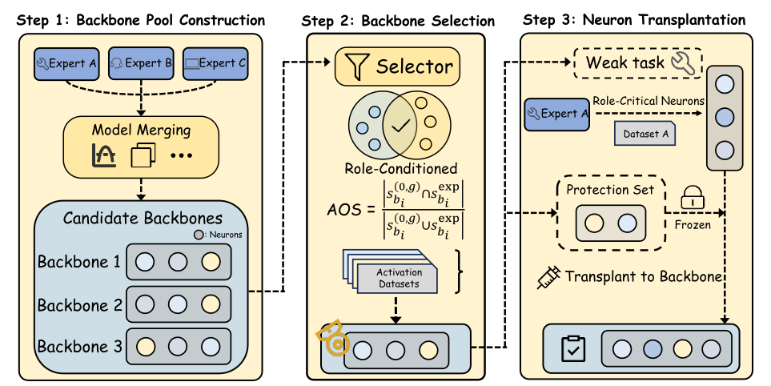
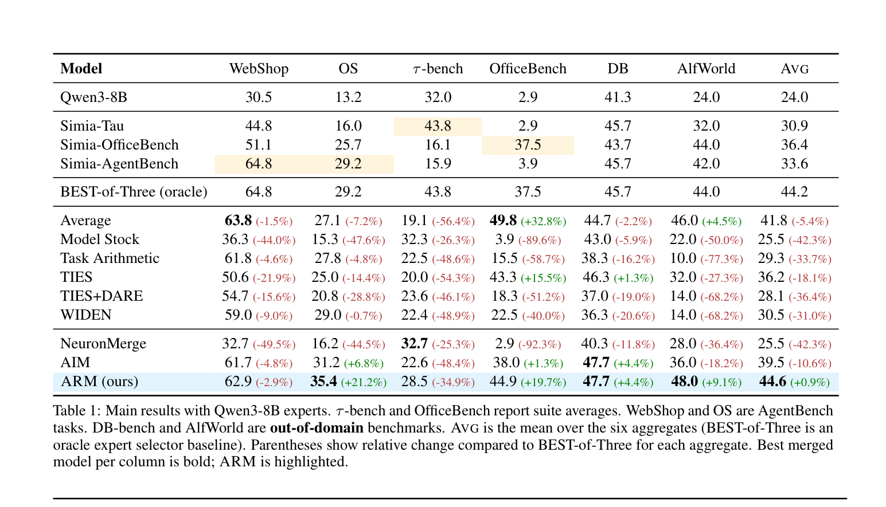
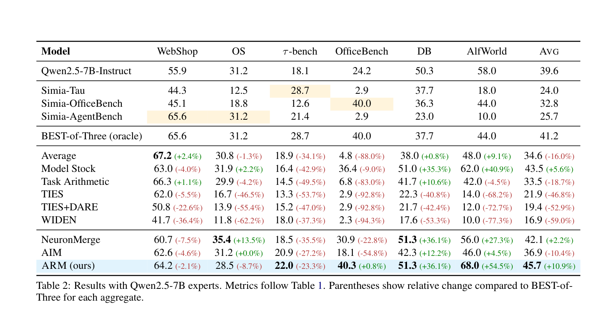

Abstract
Interactive large language model agents have advanced rapidly, but most remain specialized to a single environment and fail to adapt robustly to others. Model merging is a training-free alternative that integrates multiple specialists into one model. We propose Agent-Role Merging (ARM), an activation-guided, role-conditioned neuron transplantation method for merging LLM agents. ARM extends training-free merging from static NLP tasks to multi-turn agent scenarios and improves generalization across interactive environments, while remaining efficient and training-free.
1 Introduction
Specialists fine-tuned for one interactive environment often degrade sharply when deployed in another environment with different tool schemas, action interfaces, or trajectory distributions. Training a single universal agent across many environments is expensive and complex. ARM targets a training-free path: it starts from standard weight-space merge operators to create candidate backbones, then uses a mechanism-driven criterion to pick a stable backbone and applies localized neuron-level edits to repair role-critical failures.
Our contributions are summarized as follows:
- We propose to curate and select merged backbones dynamically for reliable general capability reservation.
- We propose a fine-grained neuron transplantation mechanism for agentic LLM merging towards better generalization.
- Extensive experiments on four in-domain suites and two out-of-domain benchmarks demonstrate that ARM consistently improves generalist performance and robustness over strong weight-space and activation-aware training-free baselines using a single merged checkpoint.
2 Method
We present Agent-Role Merging (ARM), a training-free pipeline for consolidating benchmark-specialized experts into a single multi-benchmark agent model. ARM proceeds in three phases: (i) Backbone Pool Construction, which constructs a pool of merged backbones via training-free weight-space merging, (ii) Backbone Selection selects the backbone that best preserves expert role-salient neurons using Activation-Overlap Score (AOS), and (iii) Neuron Transplantation repairs remaining capability gaps via conflict-aware neuron transplantation while strictly protecting neurons that are important for any other benchmark.

2.1 Backbone Pool Construction
ARM is a training-free pipeline that consolidates $N$ benchmark-specialized experts $\{M^{\mathrm{exp}}_{b_i}\}_{i=1}^{N}$ (all fine-tuned from the same base LLM, thus sharing architecture/tokenizer) into a single merged model. Since different weight-space merge heuristics exhibit large cross-benchmark variance, ARM first constructs a small pool of candidate merged backbones by applying a set of standard merge operators $G$ (e.g., uniform averaging, task arithmetic, TIES). Each operator $g \in G$ yields one candidate backbone:
$$M^{(0,g)} = g(\{M^{\mathrm{exp}}_{b_i}\}_{i=1}^{N}).$$
2.2 Backbone Selection via Role-Conditioned AOS
To compare candidate backbones without exhaustive interactive evaluation, ARM introduces role-conditioned MLP activation tracing on a lightweight calibration set $D_{\mathrm{cal}}$ that is disjoint from evaluation/test splits. For benchmark $b_i$ and role $r$, ARM computes role-conditioned saliency by averaging the MLP post-activation magnitude over token positions belonging to the role-critical span (trajectories missing that role span are ignored), and then selects a top-$k$ fraction of neurons per layer to form a role-salient set $S(M; b_i, r)$.
ARM then defines the Activation-Overlap Score (AOS) between a candidate backbone and the corresponding expert as a Jaccard overlap of role-salient neuron sets:
$$\mathrm{AOS}(M^{(0,g)}; b_i) = \frac{|S^{(0,g)}_{b_i} \cap S^{\mathrm{exp}}_{b_i}|}{|S^{(0,g)}_{b_i} \cup S^{\mathrm{exp}}_{b_i}|}.$$
Finally, ARM selects the backbone that maximizes mean AOS across benchmarks, yielding a robust training-free initialization:
$$g^{\star} = \arg\max_{g \in G} \frac{1}{|B|} \sum_{b_i \in B} \mathrm{AOS}(M^{(0,g)}; b_i), \quad M^{(0)} = M^{(0, g^{\star})}.$$
2.3 Conflict-Aware Neuron Transplantation
After selecting $M^{(0)}$, ARM repairs remaining capability gaps via conflict-aware neuron transplantation. It first diagnoses weak benchmarks $B_{\mathrm{weak}} \subseteq B$ using a held-out dev set $D_{\mathrm{dev}}$ (used only to decide where to apply transplantation, not to train parameters). For each weak benchmark $b$, the corresponding expert serves as the donor $M^{\mathrm{don}}_b \equiv M^{\mathrm{exp}}_b$.
ARM performs localized edits by transplanting only a small subset of donor MLP neurons (hard overwriting the neuron's rows/columns in $W_{\mathrm{in}}, b_{\mathrm{in}}, W_{\mathrm{out}}$) into the backbone. To avoid negative transfer, ARM defines a protection set that includes backbone neurons salient for any other benchmark:
$$P_{-b} = \bigcup_{b' \in B, b' \neq b} S(M^{(0)}; b').$$
It then transplants only donor-salient neurons that do not overlap with this protected set:
$$T_b = \{n \in S(M^{\mathrm{don}}_b; b) \mid n \notin P_{-b}\}.$$
This conflict-aware subtraction targets role-critical regressions while strictly protecting neurons important for other benchmarks, reducing destructive interference in multi-turn agent trajectories.
3 Experiments
ARM is evaluated on multiple interactive agent benchmarks (in-domain suites and out-of-domain benchmarks) and compared against strong training-free weight-space merging baselines and activation-aware merging methods. The results show that ARM yields a strong single merged generalist and improves worst-suite robustness by reducing role-critical errors.


For more implementation details and benchmark configurations, please refer to the main text of the paper; experiments show that ARM can merge multiple benchmark-specialized LLM agents into a single generalist checkpoint without gradient-based training, improving cross-environment generalization and worst-suite robustness by selecting a strong backbone via AOS and then applying conflict-aware role-salient neuron transplantation.
4 Conclusion
ARM is a training-free framework for consolidating benchmark-specialized LLM agents into a single generalist checkpoint. It addresses (i) instability across weight-space merge operators and (ii) destructive interference on role-critical behaviors in multi-turn agent trajectories. By combining AOS-based backbone selection and conflict-aware, role-salient neuron transplantation, ARM improves generalist performance and robustness across diverse environments.